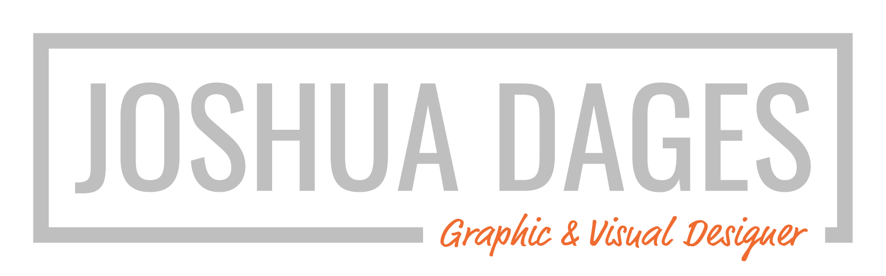

Projects
Experience
About
MARINATED
BY MARINA
Rebranding Project
Sep 2018–Ongoing | Bolida Client | Adobe Ai, Ps, Id
Working with my design studio Bolida, we partnered with Marina Starkey to rebrand her catering business.